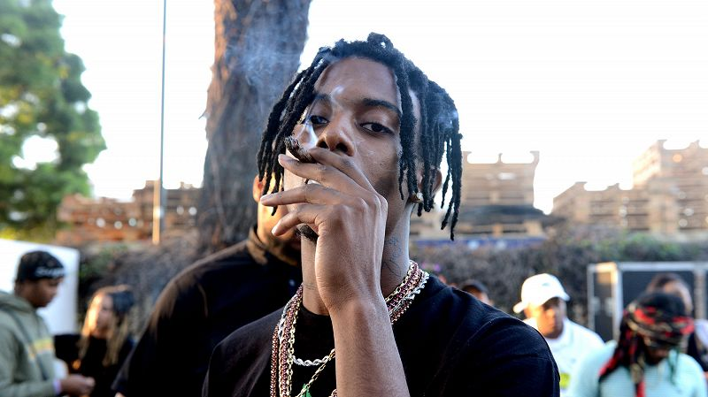

Playboi Carti es un artista que se especifica en el genero de hip hop aunque hoy en dia esta más en el genero de rage rap, ha cambiado su nombre artistico al actual, previamente se llamaba $ir Cartier, su nombre real es Jordan Terrell Carter, nacio el 13 de septiembre de 1996 en Atlanta Georgia.
Jordan no suele enseñar su vida personal más allá de joyas o ropa que compra, pero se sabe que actualmente tiene dos hijos, Onyx con la cantante Iggy Azalea y Yves que se desconoce su madre. El joven nacido en Atlanta jugaba basketball antes de dedicarse a la musica, empezó a consumir drogas desde una edad muy temprana lo cual lo llevo a abandonar la escuela tras terminar la secundaria, siempre tenia el sueño de empezar en la musica asi que un dia dejó todo atras y fue a Nueva York a intentar la musica de manera seria y profesional.
Playboi Carti o antes llamado $ir Cartier empezó a hacer musica en 2011 aunque no se tiene mucho registro de que proyectos hizo se tienen 2 mixtapes, THC: The High Chronicals y Young Mi$fit, despues el decidio cambiar su nombre artistico a Playboi Carti. Empezó a hacer musica bajo la disquera "Awful Records" donde sacó dos canciones que lo hicieron de renombre, "Fetti" y "Broke Boi" por problemas con la disquera abandonó esta y fue a la disquera de A$AP Mob "AWGE", hizo su primera aparición bajo esta disquera en la cancion del mixtape "Cozy Tapes" "Telephone Calls" donde la gente lo conoció más y esto lo hizo aparecer en mas proyecto junto a la gente de su disquera, donde conocio a A$AP Rocky, quien fue una gran inspiracion para Playboi Carti y un gran amigo, en 2017 lanzó su primer mixtape "Playboi Carti" despues de las sacar las canciones "Magnolia" y "Wokeuplikethis" junto a su mejor amigo Lil Uzi Vert, tras el exito del mixtape decidio sacar su album debut en 2018 "Die Lit" que lo impulsó a la fama, tras 2 años sin sacar musica sacó el album "Whole Lotta Red" que tras muchas cancelaciones vio la luz del dia en 2020 en navidad.
Playboi Carti por mas que sea unos de los artistas más grandes de hoy en dia, a pasado a través de muchas controversias a lo largo de su carrera bastante graves, pasan de cosas pequeñas como ser detenido varias veces por exceso de velocidad a cosas graves como abusar de su expareja fisicamente mientras estaba embarazada de su hijo.
Playboi Carti tiene un catalogo de proyectos sin salir gigante, incluso se podría decir que es mas del doble de su discografia actual y algunos se podrian considerar mejor proyectos que lo que ha realizado oficialmente el artista, simplemente en su primer mixtape "Playboi Carti" se sabe que tiene 30 canciones incluyendo demos sin salir de manera oficial, a si mismo vendria siendo con su album debut "Die Lit" que tiene 50 canciones incluyendo demos sin salir al publico general de maneras oficiales, una de los mayores problemas con esto es que su segundo album "Whole Lotta Red" consta de 3 versiones completas sin salir y se rumorea de una posible cuarta version del album sin que haya salido, de forma completamente oficial Playboi Carti se rumorea de 4 albums/mixtapes cancelados siendo, 16*29 junto a Lil Uzi Vert, Narcissist album propio de el, BBY BOI el cual se supone que se esta trabajando hoy en dia pero apunta a ser completamente cancelado pues no se han tenido noticias recientes de el y 004KT* junto al artista YoungBoy Never Broke Again.